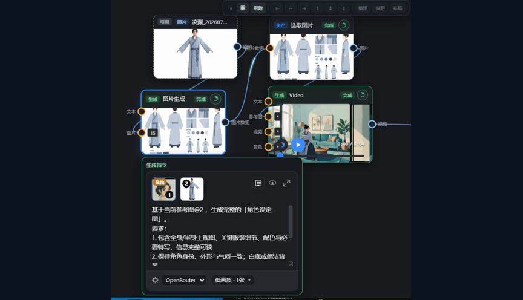

AI chat panel
@-reference project assets and the agent calls MCP tools to generate image / video / 3D / speech, edit node graphs and run workflows with live status. Multi-session history; any configured text provider.
Images, video, voice, 3D models and explorable worlds — generated, organized and reused in one desktop app. Node-graph pipelines, one-click workflows that become reusable assets, and a built-in MCP server that lets the in-app AI or Claude Code do the work. Local projects, your own keys.
Works with your favorite models
Features
AI that actually does the work. Assets, shots, node graph, director stage and timeline share one local project.
@-reference project assets and the agent calls MCP tools to generate image / video / 3D / speech, edit node graphs and run workflows with live status. Multi-session history; any configured text provider.
Claude Code / Codex connect over a stdio bridge or HTTP to plan and commit workflows, run generation and read/write assets and graphs. Stable token, audit log, concurrency gate.
MCP setup guideBuilt-in storyboard, director-review and creation skills load automatically; drop in your own SKILL.md. Skills set the process, tools execute.
Manual §5.6Workflows, skill bundles and MCP servers in one place. Script paths are listed for consent; going past the sandbox is Allow once / Reject only.
Manual §5.79 tools close the inspect → bpy → screenshot → export GLB loop, connecting outbound to the addon — no uv, no Python.
Blender toolsetText / image / video / voice / music / SFX / 3D / spatial-world nodes. Short-drama, game UI, product ad and e-commerce templates become reusable host assets — double-click to Dive in and tweak.
Manual §7Pose characters and cameras, AI blockout, 20+ primitives; capture blocking shots and record action clips into downstream nodes. Accepts 3D models, panoramas and Gaussian splats.
Manual §12World Labs Marble turns text or reference images into walkable 3D worlds; export a mesh or splat straight to the stage.
PixCake-style retouching with five intensity steps; only the requested area changes, everything else keeps original pixels.
Arrange imported and generated clips, picture-in-picture and transitions, preview a selection or the whole cut, then export.
Manual §10Agent Native
While running, the app serves a local tool server on 127.0.0.1 with a Bearer token. External agents and the in-app chat share the same tools.
$ claude mcp add aiartengine -- node ./resources/mcp-bridge.mjs ✓ Added stdio MCP server aiartengine > Make a mystery short with the short-drama template, lead from @heroine-sheet ● workflow_list_presets matched: short-drama storyboard ● workflow_plan plan preview ready ● workflow_commit host asset committed, shown in UI ● task_run running mcpTaskId=7f3a… ● task_status script ✓ beats ✓ 9-grid ✓ video …
Demo
One chain: reference image → character sheet → select image → video generation.

Workflow
Build each step by hand, or let an agent run the whole thing.
Pick a preset (including the short-drama storyboard template) or describe what you need in one sentence, preview the topology and create a reusable host asset. See Manual §7 and the short-drama guide.
Images, videos and voices referenced by GUID, with asset-package import and export.
Beat breakdown, 9-grid / 4-grid storyboard sheets and director review put the narrative rhythm on screen.
Text / image / video / voice / music / SFX / spatial-world / 3D model nodes across 30+ providers, with multi-cloud object storage. Ports must match; select nodes accept list ports only.
3D posing and cameras; capture blocking shots and record actions into downstream generation.
Arrange imported and node clips, preview a selection or the whole cut, export.
The short-drama template builds script → beats → 9-grid → collage → 4-grid → motion prompts → 36 videos; the Episode Pipeline window regenerates a stage and invalidates downstream consistently.
Get Started
Download
Installers bundle their own runtime — no Node.js needed. Add your model keys and start creating.
Pushing a v* tag builds every platform on GitHub Actions. Or run from source: npm install && npm run dev (Node.js 22+).
Community
Join the QQ groups, watch the video tutorials or open an issue.
Open source, free and local-first. Install and get your first clip in five minutes.